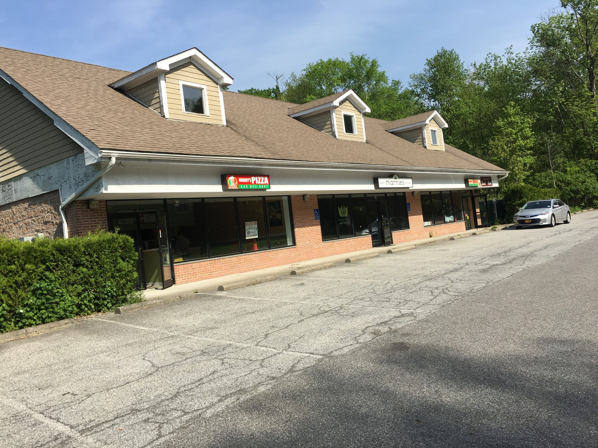
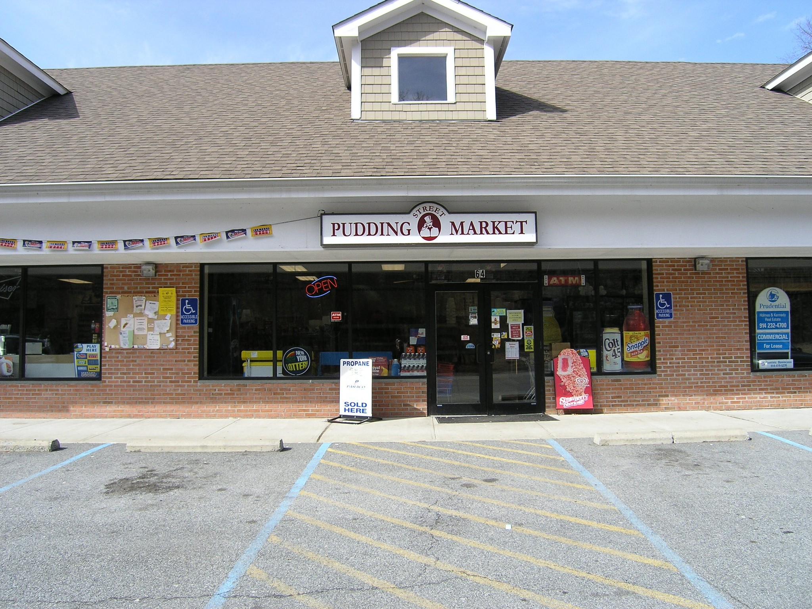
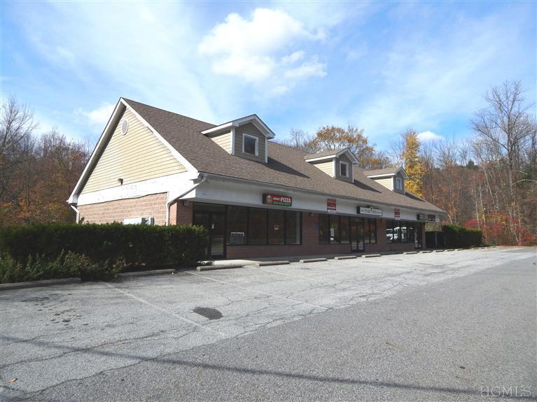
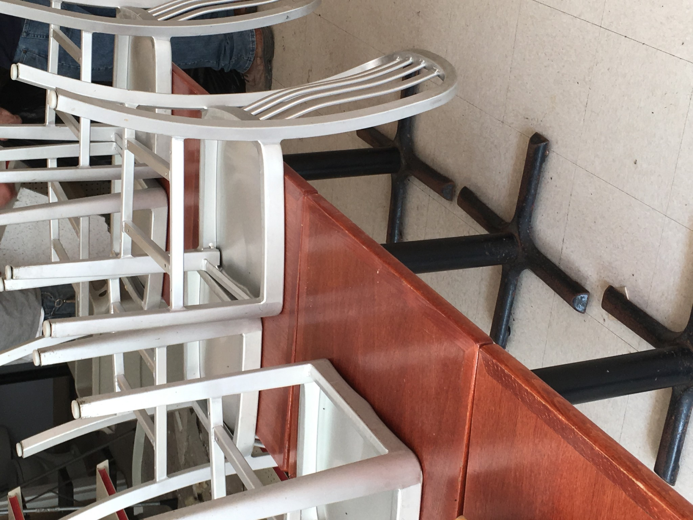
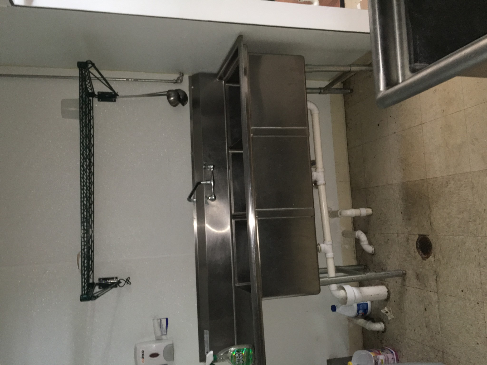
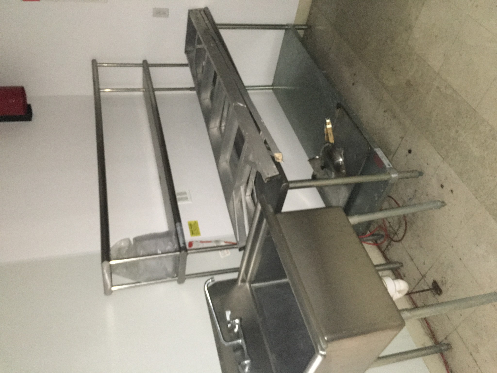
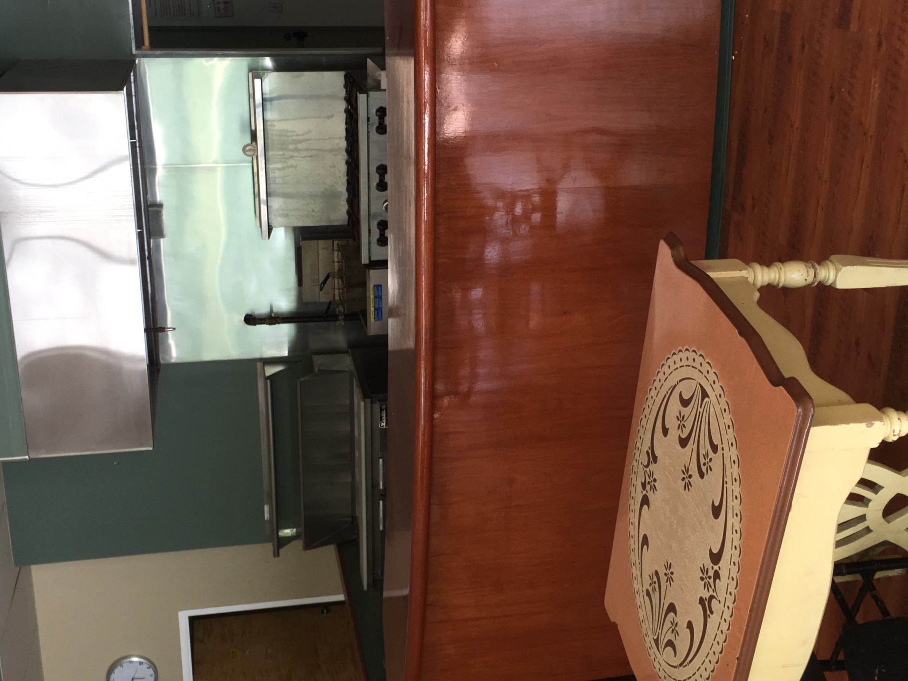
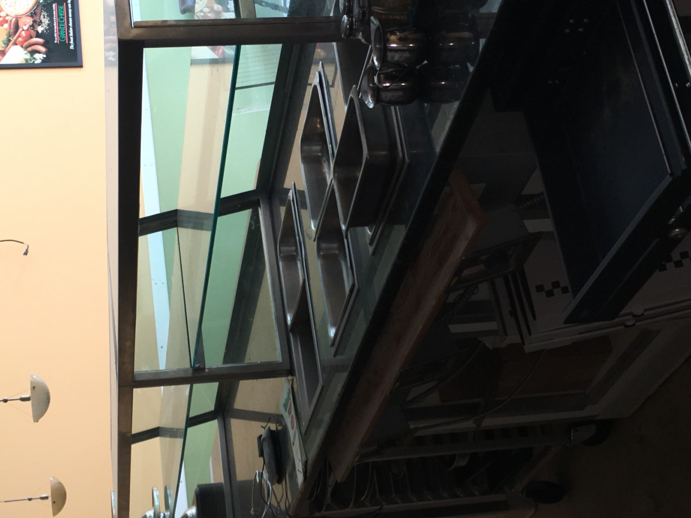

1 / 8
Go Back to Proerty Page

2 / 8
Go Back to Proerty Page

3 / 8
Go Back to Proerty Page

4 / 8
Go Back to Proerty Page

5 / 8
Go Back to Proerty Page

6 / 8
Go Back to Proerty Page

7 / 8
Go Back to Proerty Page

8 / 8
Go Back to Proerty Page
❮
❯